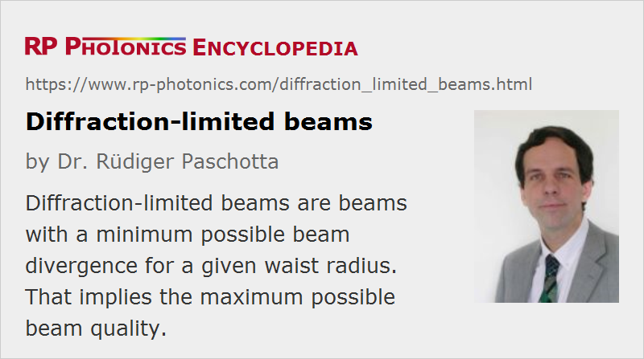

Diffraction-limited Beams
Definition: beams with a minimum possible beam divergence for a given waist radius
German: beugungsbegrenzte Strahlen
How to cite the article; suggest additional literature
Author: Dr. Rüdiger Paschotta
A laser beam is called diffraction-limited if its potential to be focused to small spots is as high as possible for the given wavelength, i.e., if its beam quality is ideal. More precisely, this means that a beam waist with a given beam radius, generated from the beam by focusing e.g. with a curved mirror, is associated with the minimum possible beam divergence. What exactly this means depends on the definition of the beam radius and beam divergence. If second moments are used for the definition of both quantities, the minimum beam parameter product is reached for a Gaussian beam, which has not only a Gaussian intensity profile but also a flat phase front at the beam waist.
A laser which operates on a single transverse resonator mode will usually have a diffraction-limited output, since that single mode is usually the fundamental resonator mode, and the shape of this is usually close to Gaussian. Non-ideal beam quality can be caused by intracavity beam distortions, e.g. in the gain medium, which can either deform the fundamental mode or (more frequently) cause transverse multimode operation. Note that the beam quality of a laser depends not only on the strength of intracavity distortions, but also on certain details of the resonator design; optimization of the latter can be essential for reaching a diffraction-limited output.
For a given optical power, a diffraction-limited beam has the highest brightness.
Questions and Comments from Users
Here you can submit questions and comments. As far as they get accepted by the author, they will appear above this paragraph together with the author’s answer. The author will decide on acceptance based on certain criteria. Essentially, the issue must be of sufficiently broad interest.
Please do not enter personal data here; we would otherwise delete it soon. (See also our privacy declaration.) If you wish to receive personal feedback or consultancy from the author, please contact him e.g. via e-mail.
By submitting the information, you give your consent to the potential publication of your inputs on our website according to our rules. (If you later retract your consent, we will delete those inputs.) As your inputs are first reviewed by the author, they may be published with some delay.
See also: beam quality, beam parameter product, beam divergence, laser beams, Gaussian beams, brightness
and other articles in the category general optics
|  |
If you like this page, please share the link with your friends and colleagues, e.g. via social media:
These sharing buttons are implemented in a privacy-friendly way!